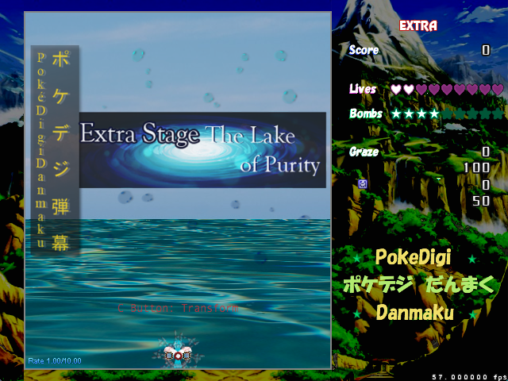
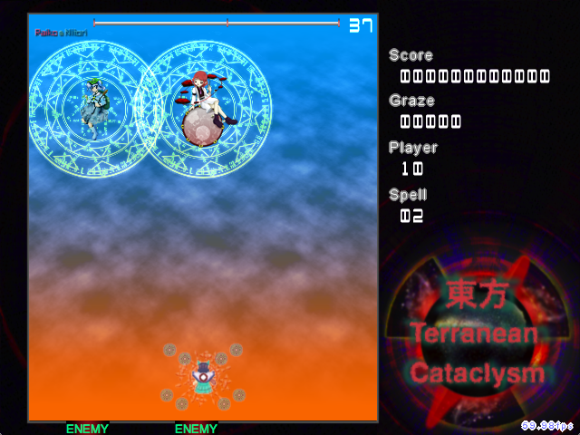
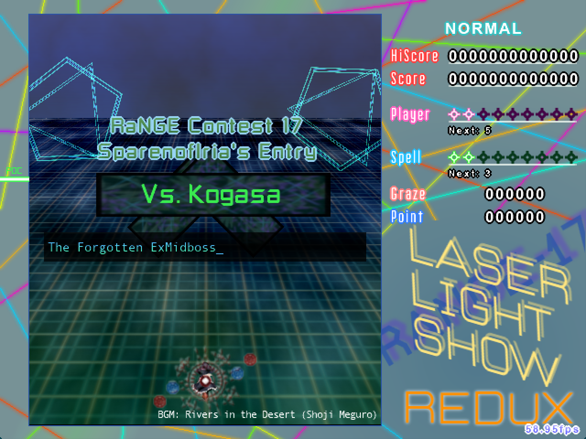

Game Post Archives
Before I began using this website for projects, I used MotK. My release thread was where I provided information, kept my posts, and released updates. Eventually I began using this website for those projects as well, but it was always more of a 'side' thing, where key information would be here, but the real advertisement and updates took place on MotK.
Fast forwards to Feb 2020. MotK v2 preparing to shut down. The content and the way it was written back on MotK is different from how it is displayed here - it's a less formal, smoother form. Structured, yet differently so. And so it has come time to back up these posts. Note that dead links will not be fixed. But regardless, enjoy these archives. They are in the order in which they were listed in my thread's OP.
PokéDigiDanmaku
LOCAA Contest #3 Entry: Suicune Boss Battle
RaNGE Contest #10 Entry: Sanae Boss Battle
Halloween Contest Entry: Sekibanki Boss Battle
LOCAA Contest #4 Entry: Death Match in the Skies
Danmaku Dodging for Dummies ph3
Digital Earth: Conquest
Artifact Contest #2 Entry: Of Celestials and Master Sparks
AAA Contest Entry: Nuclear Hell Raven
LOCAA Contest #6 Entry: Danmakufu Troll Stars
ICM Contest Entry: The Avatar of Mountains and Lakes
東方変幻永〜Indeterminate Insufferable Illness
Danmakufu Wars - Sparen vs PhantomSong
RaNGE 16 Contest Entry - Descent of the Mochi Hammer
RaNGE 17 Contest Entry - Shimmering Cyclochasm
RaNGE 19 Contest Entry - Moonstruck Magician
RaNGE 20 Contest Entry - Seasonal Rabbit
BHA 01 Contest Entry - Elemental Shapes

This is the main announcement page for PokéDigiDanmaku, a complete game made in Touhou Danmakufu 0.12m. It features 6 stages on 6 difficulties and an Extra Stage. It is the cumulation of work done over more than a year, and has been the foundation for my progress in 0.12m.
Please note that this game is HARD. The difficulty curve is almost nonexistent; it just starts hard and continues to get harder. The exceptions are Very Easy mode, which starts pitifully easy and ends relatively easy, and Overdrive mode, which starts ridiculously hard and stays ridiculously hard.
Note on Eeveelutions and which difficulties they appear in:
Vaporeon: VNO Flareon: ENL Jolteon: NHO Espeon: VEHO Umbreon: EHL Leafeon: VHLO Glaceon: VENL Sylveon: X
Current Version: 2.04 [ExPDDVee E2.8]
Current Release Version: 2.04 [ExPDDVee E2.8]
All versions come with the latest version of the player character available at the time.
Download PokéDigiDanmaku
*Current Version is my current version. Current Release Version is the latest Devel release for the public. Current Demo Version is the latest stable/demo release.
**If you want the latest version, you must contact me directly.
Current Features
-Full game (all current complete stages) VENHLO
-Boss Rush (all current complete non-Extra bosses) VENHLO
-All of Stage 1, VENHLO
-All of Stage 2, VENHLO
-All of Stage 3, VENHLO
-All of Stage 4, VENHLO
-All of Stage 5, VENHLO
-All of Stage 6, ENHLO
-All of Extra Stage, X
Current Progress
Done
All Demo Versions
FINAL RELEASE 1: Version 2.04 Release
DEMO 6.2: Version 1.37 Release
DEMO 6.1: Version 1.31 Release
DEMO 6: Version 1.29 Release
DEMO 5: Version 1.00 Release
DEMO 4: Version 0.31 Release
DEMO 3: Version 0.16 Release
DEMO 2: Version 0.14 Release
DEMO 1: Version 0.11 Release
PREVIEWS


Stage 1 Normal (Version 0.12): http://youtu.be/7IWLUERj9J0
Stage 1 Hard (Version 0.14): http://youtu.be/5FdnPBkCskg
Stage 1 Lunatic (Version 0.16): http://www.youtube.com/watch?v=iYHUpOPJtos *Ozzy's Review/Playthrough
Stage 2 Hard (Version 0.31): http://www.youtube.com/watch?v=_qnJx5-8L3w
Stage 1 Overdrive (Version 0.45): http://www.youtube.com/watch?v=tQPK6QNnFQo *Miransu's replay
Stages 1-3 Highlights (Version 0.57): http://www.youtube.com/watch?v=9vtMj0ENFTE
Stage 4 Normal (Version 1.29b): http://www.youtube.com/watch?v=3GHr5stYk2U
Stages 1-4 Hard (Version 1.37): http://www.youtube.com/watch?v=FDP4_QL-8mw *Ozzy's Review/Playthrough
Stage 5 Preview (Version 1.43): http://www.youtube.com/watch?v=piHoIiVvZVc
Stage 5 Preview (Version 1.47a): http://www.youtube.com/watch?v=uaaNndqmpxc
Stage 6 Preview (Version 1.63): http://www.youtube.com/watch?v=lU86BYAclvg
Extra Stage Preview (Version 1.75): http://www.youtube.com/watch?v=2dmU6goR-h8
Extra Stage Preview (Version 1.82): http://www.youtube.com/watch?v=cCaK-bLIT5k
FULL GAME PLAYTHROUGHS
http://www.youtube.com/watch?v=7yynSvyoRwY - Kirakishou (Weekend Danmaku #53)
https://www.youtube.com/watch?v=R8mr6mXmC3o - Ozzy840/ExPorygon (Let's Play Danmakufu [32])
Suicune Boss Battle
This is the main announcement post for my LOCAA Contest #3 Submission, which I plan to incorporate into PDD Extra (...Maybe). This is a project for 0.12m only. This script will feature all kinds of extras outside of the main script, including a nonspell rush and my collection of polar/parametric experiments.
Current Version: 1.10
Current Release Version: 1.09 [Download]
Current Release Package: 1.09 [Download]
**Comes with Kogasa Player Scripts v0.10 and Touhou Danmakufu 0.12m
*Current Version is my current version. Current Release Version is the latest Devel release.
*All versions besides the final release will most likely be hosted as unlisted on Bulletforge, mainly due to the fact that the submission shouldn't really be too public.
Current Features
-Easy and Extra Modes, with the option to not have the STG_Frame
-Nonspell rush (NS 1-6)
-Polar experiments (1-8+Extra)
-Parametric experiments (1-4+Extra)
-Spells: 1-7
-Custom Frame
Current Progress
This project is complete.
All Demo Versions
Demo 4: [Version 1.09]
Demo 3: [Version 1.08]
Demo 2: [Version 1.07]
Demo 1: [Version 1.00]
PREVIEWS

SPOILER ALERT
http://i1164.photobucket.com/albums/q570/SparenofIria/Grapher_zps79b8575f.png
Polar Experiments Part 1: http://www.youtube.com/watch?v=jBusvmlFbng
Polar Experiments Part 2: http://www.youtube.com/watch?v=-ypZRXD7QUE
Psycho Bullets: http://www.youtube.com/watch?v=XNFWNmbuA_I
Suicune Boss Battle v1.07 [http://www.youtube.com/watch?v=slYZIUQ4LPo&feature=youtu.be]
Suicune Boss Battle v1.07 [http://youtu.be/a3sHFZdjY-k?t=8m25s] *Kirakishou's Playthrough
Suicune Boss Battle v1.09 [http://www.youtube.com/watch?v=zXpiENqr0BE] *Rogus's Playthrough
Sanae Boss Battle
This is the main announcement post for my RaNGE Contest #10 Submission. This is a project for 0.12m only.

This project features 3 modes. Normal, Miracle, and Abnormal. Normal is Easy-Normal. Miracle is around Normal-Hardish. Abnormal is just weird.
Current Version: 0.07 (RC-1)
Current Release Version: 0.07 [http://www.bulletforge.org/u/sparen/p/range-10-contest-entry-sanae-boss-battle/v/007]
Current Release Package: 0.00 [N/A]
**Comes with Kogasa Player Scripts v0.10 and Touhou Danmakufu 0.12m
**Whether or not KogasaB will be included will be determined after the spellcards have been edited
*Current Version is my current version. Current Release Version is the latest Devel release.
Current Features
-3D Background ripped from MoF using Drake's Projects
-Ripped HUD comprised of previous projects' HUDs and MoF HUD from Drake's Projects
-Kogasa Player Script (made by me)
-Effects carried over from PDD
-3 Nonspells, 3 Spells, 3 Difficulties
-Extra Aesthetic spell
Current Progress
Done
All Demo Versions
RC-1 v0.07 [Version 0.07 Release]
PREVIEWS

https://www.youtube.com/watch?v=afvm8FWKWWQ&index=2&list=PLJ2F_5rhjlXT1kzX8UkVRlwFyG_rPcj0h *Normal Mode - DNHArt 1
https://www.youtube.com/watch?v=icgtOFJt8bE *Ozzie840/ExPorygon (Let's Play Danmakufu [29])
Sekibanki Boss Battle
This is the main announcement post for my Halloween Contest Submission. This is a project for 0.12m only.

This project features 5 modes. Easy, Normal, Hard, Lunatic, and Phantasm. Choose Phantasm if you like Lunatic because Lunatic is nerfed down.
Current Version: 1.02
Current Release Version: 1.02 [Download]
Current Release Package: 0.00 [N/A]
*Current Version is my current version. Current Release Version is the latest Devel release.
Current Features
-3D Background ripped from DDC using Drake's Projects
-Ripped HUD comprised of previous projects' HUDs and DDC HUD from Drake's Projects
-Effects carried over from PDD
-3 Nonspells, 3 Spells, 5 Difficulties
Current Progress
Post-release testing
All Demo Versions
RC-1: http://www.shrinemaiden.org/forum/index.php/topic,13738.msg1036229.html#msg1036229
RC-2: http://www.shrinemaiden.org/forum/index.php/topic,13738.msg1036229.html#msg1036229
RC-3: http://www.shrinemaiden.org/forum/index.php/topic,13738.msg1036293.html#msg1036293
PREVIEWS
http://www.youtube.com/watch?v=BfMK1XNNgfM&list=PLJ2F_5rhjlXQukEdm_QhTcsr0HaSj6xU5&index=21
Death Match in the Skies

This is the main announcement post for my LOCAA Contest #4 Submission. This is my first ph3 script and comprises of a battle against Raiko and Nitori.
The code is... REALLY BAD. People should not attempt to base their systems and code off of this script. Never before have I randomly changed shot sheets in the middle of a script and since this is my first ph3 script, there are probably bugs galore hidden from the naked eye. Please do not take code from this project unless you want your project to break or work incorrectly.
Current Version: 1.03
Current Release Version: 1.03 [Download]
Current Release Package: 0.00 []
*Current Version is my current version. Current Release Version is the latest Devel release.
*All versions besides the final release will most likely be hosted as unlisted on Bulletforge, mainly due to the fact that the submission shouldn't really be too public until the entry is released.
Current Features
-5 Nonspells
-6 Spells
-Pretty Pretty Backgrounds
-Sunset bullets
Current Progress
-This script is completed
All Demo Versions
RC-2: http://www.shrinemaiden.org/forum/index.php/topic,13738.msg1061374.html#msg1061374
RC-3: http://www.shrinemaiden.org/forum/index.php/topic,13738.msg1063544.html#msg1063544
RC-4: http://www.shrinemaiden.org/forum/index.php/topic,13738.msg1066340.html#msg1066340
PREVIEWS
*I'm not going to post the Youtube links for the early versions. They can be found under the playlist "Sparen's Danmakufu" on my Youtube if anyone wants to view the videos, which, for the most part, are simply previews detailing my progress in ph3 as a whole and mainly showcase new developments.
DNHArt 59: Death Match in the Skies v1.01
VichyCatalan: Raiko & Nitori Script by Sparen

This is the main announcement post for my work in progress Danmaku Dodging for Dummies ph3 version. It is meant to be a step by step guide to teach people unfamiliar with danmaku how to dodge. It is a stage that has units, each of which has its own attacks. This project will coexist alongside my other projects, and I unfortunately cannot give a release date because I will be working on this project for an extended period of time.
Edit (Feb 22, 2014): I am quickly losing motivation to complete this project. Chances are I will only complete up to Unit 5
After a number of units, it will become more focused on actual dodging rather than new techniques, and I will include complete boss battles inside.
Current Version: 0.34
Current Release Version: 0.34 [Download R4]
Current Release Package: 0.00 []
*Current Version is my current version. Current Release Version is the latest Devel release.
Current Features
Unit 1: 9 attacks + Rumia Boss (3 attacks) + EX Rumia Boss (3 attacks) [Complete]
Unit 2: 9 attacks + Cirno Boss (5 attacks) + EX Cirno Boss (5 attacks) [Complete]
Unit 3: 9 attacks + Wakasagi Boss (5 attacks) + EX Wakasagi Boss (5 attacks) [Complete]
Unit 4: 9 attacks + Nazrin Boss (5 attacks) + EX Nazrin Boss (5 attacks) [Complete]
Unit 5: 9 attacks + Nue Boss (5 attacks) + EX Nue Boss (5 attacks) [Complete]
Current Progress
-This project has been terminated/is complete
All Demo Versions
R1: http://www.shrinemaiden.org/forum/index.php/topic,13738.msg1063328.html#msg1063328
R2: http://www.shrinemaiden.org/forum/index.php/topic,13738.msg1067107.html#msg1067107
R3: http://www.shrinemaiden.org/forum/index.php/topic,13738.msg1073117.html#msg1073117
R4: http://www.shrinemaiden.org/forum/index.php/topic,13738.msg1079699.html#msg1079699
Previews
http://www.youtube.com/watch?v=IcVdyB0Pp6I
http://www.youtube.com/watch?v=pTswzIohrkU
http://www.youtube.com/watch?v=Ik381KaTgp0

This is the main announcement post for Digital Earth: Conquest, my current full game. It is to be a complete 6 stage + Extra + whatever other stages game with 4 difficulties, and uses a package script.
The three stage demo has been released. Other release versions will be hosted as unlisted on Bulletforge, although I will gladly give you a link if you want to play a devel release for whatever purpose (feedback would be highly appreciated).
I'm starting this project from an initial scripting level that's relatively high. Unlike PokéDigiDanmaku, this game should be somewhat playable and hopefully enjoyable to Digimon fans and those unfamiliar with Digimon alike. I will try to not BS any of this either; that way, the overall quality will be slightly better.
This game has 4 difficulties. Notable gameplay-affecting gimmicks include using graze to gain DigiEnergy (allowing you to evolve by pressing C if you meet the requirements), point items being used for extends (and different colored point items giving bonus points depending on your player), and flash bombs, which are restockable. Please read the ReadMe for strategies, gimmicks, directions, and other miscellaneous information that can and will make your experience more enjoyable.
All enemy sprites made by Digimon; I do not own those.
Player sprites made by me.
Current Version: 1.55
Current Release Version: 1.55 [Official Release]
Current Demo Version: 1.55 (RC-9) [See "All Demo Versions" for link to post]
*Current Version is my current version. Current Release Version is the latest Devel release.
Current Progress
SYSTEM: Optimization, Bullet Delete Effect Implementation
STAGE 1: Done
STAGE 2: Done
STAGE 3: Done
STAGE 4: Done
STAGE 5: Done
STAGE 6: Done
STAGE X: Done
All Demo Versions
Download Latest Version: RC-9
Demo 1: March 25, 2014: [RC-1]
Demo 2: May 26, 2014: [RC-2]
Demo 3: May 31, 2014: [RC-3]
Demo 4: Jan 12, 2015: [Closed Demo]
Demo 5: Jan 15, 2015: [Closed Demo]
Demo 6: Apr 30, 2015: [RC-6] **Beta-Release
Full Game: May 2, 2015 [RC-7] **Official Release!
Full Game: May 3, 2015 [RC-8] **Official Release + Bugfixes!
Full Game: May 3, 2015 [RC-9] **Official Release + Bugfixes!
Previews


Video Playthroughs
Sparen - RC-2
ExPorygon - RC-5 **Let's Play Danmakufu 38
Gizmo the Dragon - RC-7
Spinoffs
TheProjectThatMustNotBeNamed
Selected Text from ReadMe
Hello to all players of Digital Earth: Conquest! This is Sparen, the creator of said game.
This is a game where you play as either Flamon or Strabimon (Rookie level Digimon from Digimon Frontier). There's a massive tournament and Digimon from across the Digital World have met to compete. However, is there an ulterior motive behind this tourney? And if so, it's up to you to stop it.
This game is my first major full game in ph3. In Credits.rtf, you can see those who contributed to this project. In the Changelog, there is a pretty detailed description of every edit made. Note that there may be typos and lots of weird exclamations when something was completed. In CommonData.rtf, if it is packaged with your game, there is a description of all of the CommonData used in this game. Programmers may find this helpful.
This game comes with a number of fonts; I highly recommend that you install ALL of them onto your computer, as there is a chance that Danmakufu will fail to install them when it runs, which may result in text behaving incorrectly.
Note that this game comes after PokéDigiDanmaku chronologically; it is not required that you play the former in order to understand the plot of this game, since PDD only manifests itself in Veemon's dialogue and some other references.
The Player you choose is very important for the game. Plotwise, there aren't many changes. However, the Point of Collection, DigiEnergy required to Digivolve, the number of flash bombs, and many other things are changed. Select whichever one you like; they both have their pros and cons.
In this game, there are a number of gimmicks to be observed.
Firstly, there are multiple types of items. The blue items give double points to Strabimon, while the red items give double points to Flamon. Since items are key to getting extends, you will want to POC or manually collect as many of them as possible. Bombing will also attract all items on-screen to you. There are also DigiEnergy packets.
DigiEnergy is this game's main gimmick. When you hit a certain number of DigiEnergy (gained based on graze), you will be able to Digivolve your player up to two times. DigiEnergy amounts vary based on player and difficulty, since higher difficulties provide more graze. When you Digivolve, you will gain a power boost. Note that if you die, you will revert back to the base form of your player, and that at during events, you will also revert (although your DigiEnergy will be refunded). All attacks are balanced to the base forms, Strabimon and Flamon, so evolving is purely positive, unless you want the attacks to last longer.
Flash Orbs are items similar to the Time Orbs of Imperishable Night. When you get enough of these, you will gain a flash bomb. You get them by damaging enemies unfocused. You will not gain any while bombing or focusing.
This game comes with a number of configuration options. You can set the default amount of lives to start the game with, the music and sound effect volume, and effects.
The Effects deserve the most attention. There are four levels of effects: Low, Medium, High, and OD (Overdrive). Low has minimal effects. Medium adds the magic circle, charge effects, and flash orb graphics. High will add most of the other effects. OD will add the rotating ring of numbers around bosses.
If you find that this game is running at 55 FPS or lower, you may want to lower the effects. I suggest either High or Overdrive to have the full experience of playing this game.
If there are any questions or concerns, I can be reached by Private Message (PM) on the Maidens of the Kaleidoscope Forums or on the Moriya Shrine Forums. I can also be contacted via Skype or e-mail.
Of Celestials and Master Sparks

This is the main announcement post for my Artifact 2 contest entry: Of Celestials and Master Sparks. It features the required Marisa player and is a complete stage featuring a Patchouli mid boss and a Tenshi boss.
Current Version: 1.01
Current Release Version: 1.01 [Download RC-2]
*Current Version is my current version. Current Release Version is the latest Devel release.
Current Progress
STAGE A: DONE
MIDBOSS: DONE
STAGE B: DONE
BOSS: DONE
All Demo Versions
RC-1: http://www.shrinemaiden.org/forum/index.php/topic,13738.msg1086042.html#msg1086042
RC-2:https://www.shrinemaiden.org/forum/index.php/topic,13738.msg1243594.html#msg1243594
Previews


https://www.youtube.com/watch?v=pN0pSrhuo98
This is the main announcement post for my Apprehensive Adherent Abasement contest entry: Nuclear Hell Raven. It features an Utsuho boss.
I would not have done this project without the constant reminders that I finished my RaNGE 10 Entry in like no time at all + I might not actually be a runner-up in this one (unless Talos or CK Crash or Sariel enters -_- (OR DRAKE)). Either way, the background is hideous (bear with me with that one) and there is no way to toggle effects for this script because without the fog, you can't see any bullets in the non spells because my stage background is like... white.
Current Version: 1.00
Current Release Version: 1.00 [Download RC-1]
*Current Version is my current version. Current Release Version is the latest Devel release.
Current Progress
Done
All Demo Versions
RC-1: http://www.shrinemaiden.org/forum/index.php/topic,13738.msg1093240.html#msg1093240
Previews
https://www.youtube.com/watch?v=6rie53Kr1RU&index=74&list=PLJ2F_5rhjlXT1kzX8UkVRlwFyG_rPcj0h
Danmakufu Troll Stars

This is the main announcement post for my LOCAA 6 Contest Entry, Danmakufu Troll Stars. This project has two parts - a stage portion meant to carry the Spirit of Unreasonable Mechanism and a boss portion meant to refresh scripters minds that there are funny and memorable things out there in the world of Danmakufu.
This project is not meant to humiliate, insult, or in any way degrade any of those who are featured. This content of this script is not meant to be taken seriously. Please do not publicly or privately degrade any of those featured or exaggerate the points featured in this script to the point that those featured feel more uncomfortable than necessary. With some exceptions, any and all of those featured can be switched out and replaced by others. Please inform me if you would NOT like to be featured in this script.
Those featured as part of the system (not to be replaced):
Drake - Player
Helepolis - Cutin
TrollTrain - STG_Frame and background
Infinite Ultima Wave - Playlist Title
Those featured in boss attacks (in order of appearance):
Lunarethic [Permission granted]
Sparen [Permission granted]
Miplouf [Permission granted]
I Have No Name [Permission granted]
GTbot [Permission granted]
Miransu Uwabami [Permission granted]
ExPorygon
AJS
Thaws
CK Crash [Permission granted]
PhantomSong [Permission granted]
Trickysticks [Permission granted]
Hunguil [Permission granted]
TalosMistake
Kirbio [Permission granted]
Gusano2314 [Permission granted]
FondueMaster [Permission granted]
Arby26
Darkness1
Sariel/Gungnir
Infinite Ultima Wave [Permission granted]
Naut
Blargel
Those not to be featured:
N/A
Current Version: 0.20a
Current Release Version: 0.20a [See below for download]
*Current Version is my current version. Current Release Version is the latest Devel release.
Current Progress
Done
All Demo Versions
RC-1: See following post: RC-1
Previews

(Trust me, you don't want her as a conductor)

(You know, 3D is fun...)
Official Video: (links to other videos of this script will be in the description)
DNHFart 2 ***SPOILER WARNING***
The Avatar of Mountains and Lakes

In the end I decided that I will not be able to to my Sparen Boss Battle until DEC is completed due to limitations on myself as well as the plethora of system upgrades I am in the midst of. Therefore I have decided on something more interesting for the time being - a Kanako boss battle for the Incident Causer Mayhem contest hosted by PhantomSong.
Current Version: 1.00a
Current Release Version: 1.00a
*Current Version is my current version. Current Release Version is the latest Devel release.
Current Progress
Final testing
All Demo Versions
RC-1/RC-2: See following post: [https://www.shrinemaiden.org/forum/index.php/topic,13738.msg1139793.html#msg1139793]
Previews
RC-1: DNHArt 82
*All other videos of this script will be linked in this video's description

Indeterminate Insufferable Illness (Hengenei) *was* a planned game that has since been cancelled - see bottom of post for premise.
Still, I plan to at least make the Reisen-Marisa dual boss battle as a system transition to the future SeitenTouji system, so one component of this project will probably come to fruition.
Current Version: N/A
Current Release Version: N/A
Current Demo Version: N/A
*Current Version is my current version. Current Release Version is the latest Devel release.
Current Progress
Planning
All Demo Versions
RC-1: ???
Previews
None as of now
ORIGINAL CONTENT OF POST:
This is the official release post for my next major (and perhaps final) project in Touhou Danmakufu - 東方変幻永〜Indeterminate Insufferable Illness. This will be a long term project, and I am posting this thread now for the following reasons:
-I will need a composer/remixer/arranger who will be willing to make remixes of Touhou bgm and perhaps original music for stages - preferably, the same person for the entire game's bgm. If this position is not filled, music will default to ZUN's. By default, this will prevent international release of the game.
-I need someone to make cut ins and sprites of enemies. You will get to make a foaming Chen, an insane Sanae, and a drunken Suika (well... she's always drunk). If the cut in position is not filled, I will do cut ins myself and events will default to my DEC event system, where there is only a face and nothing else. If the spriter position is not filled, I will either do the sprites myself (i.e. no attack animations) or will default to SpellCardCollection sprites, in which case, the game will be limited to a free download on Bulletforge, since I won't even be able to sell it at a convention.
MUSIC: FrenticPony, TBA
CUTINS: Ultimadragon88
SPRITES:
As for all other resources, I can hopefully apply for a creative tech grant to get me access to textures and a copy of the Adobe Creative Suite. Other option is to commission people or make them myself, or to use ZUN backgrounds.
If you are interested in one of the positions, be aware of the following:
-I cannot pay you.
-Please contact me via PM or Skype
-I cannot start scripting Stage 1 without a bgm. If I do not have a composer at the time and someone wishes to help me out afterwards, you will be restricted to the tempo and song chosen.
Thank you.
Now, the plot premise:
Reisen is walking towards the SDM to deliver some medicine. However, Sakuya refuses to let her pass, and then attacks, blaming Reisen for her madam's insanity and Flan's mysterious disappearance. And then it goes south from there.
The entire plot has already been determined, as have all of the bosses. I am to be the sole scripter for the majority of the project, with the exception of function libraries and other resources made by others
Sparen vs PhantomSong
I would now like to announce the commencement of my next standalone script, which is my half of the Danmakufu Wars 'competition'. Both challengers (me and PhantomSong), in order to teach me to have fun while scripting in order to make my scripts good again (and so I like what I do a bit more), decided to have a three non spell three spell no-pressure no-deadline 'contest' with one-another. Rules were simple. Choose one of the three provided waifu and make a script. From my [Sanae, Kogasa, Utsuho], PhantomSong chose Kogasa. From PhantomSong's [Yuyuko, Ran, Kokoro], I chose Ran.
And so the quest began for me to make what I want to be my best standalone script. Ever.
Do not use Mr. Blue's Reimu with this script.
All Demo Versions
RC-1: Version 1.00; Aug 16, 2015
RC-2: Version 1.01; Aug 16, 2015
RC-3: Version 1.02; Aug 20, 2015
Video
DNHArt 115
Descent of the Mochi Hammer

I would now like to announce the commencement of my next standalone script, which is my entry for the RaNGE 16 Contest hosted by Lefkada here on MotK.
Originally, there was to be a stage with a mid boss as well, but those were dropped due to a number of reasons.
Since I copy-pasted SeitenTouji's system over, continues, extend systems, Spell Practice, and a number of other things (including four difficulties) are automatically built in and will be implemented.
All Demo Versions
RC-1: Link to post
RC-2: Link to post
RC-3: Link to post
RC-4: Link to post
Video
https://youtu.be/qXjvFX1aJYo
Shimmering Cyclochasm

I would now like to announce the commencement of my next standalone script, which is my entry for the RaNGE 17 Contest hosted by PhantomSong here on MotK.
Featuring Kogasa Tatara because why not.
Since I copy-pasted SeitenTouji's system over, continues, extend systems, Spell Practice, and a number of other things are automatically built in and will be implemented.
All Release Versions
RC-1 (2017 07 13): http://www.bulletforge.org/u/sparen/p/range-17-shimmering-cyclochasm
Video
https://www.youtube.com/watch?v=F1UQy3gPeoA
Moonstruck Magician

I would now like to announce the commencement of my next standalone script, which is my entry for the RaNGE 19 Contest hosted by ExPorygon here on MotK.
This script features my Reisen player and an extra-crazy Marisa Boss. I will attempt to maintain its status as a serious script as best as I can, but some weird features may leak through the filter.
Since I copy-pasted SeitenTouji's system over, continues, extend systems, Spell Practice, and a number of other things are automatically built in and will be implemented.
All Release Versions
RC-3 [2018 06 19]: Release Post
RC-4 [2018 06 20]: Release Post
RC-5 [2018 06 20]: Release Post
RC-6 [2018 07 15]: Release Post Download
Video
DNHArt 133: https://www.youtube.com/watch?v=s9vgI5BluVQ
Seasonal Rabbit
I would now like to announce the commencement of my next standalone script, which is my entry for the RaNGE 20 Contest hosted by Trickysticks? here on MotK.
This script features my Reisen player and a Tewi Boss, acting as a 'sequel' to my RaNGE 19 entry. As April 1 is near, I am providing two difficulties for this script - one for standard play and one for more... unique play.
Since I copy-pasted SeitenTouji's system over via RaNGE 19, continues, extend systems, Spell Practice, and a number of other things are automatically built in and will be implemented.
All Release Versions
RC-3
RC-4
Video
DNHArt 137
Elemental Shapes
I would now like to announce the commencement of my next standalone script, which is my entry for the Bullet Hell Artistry #1Contest hosted by Jean Fox on the Bullet Hell Engines discord server.
This script trashes most of the systems I typically use and opts for a simple model with no score, lives, or items. There is no package this time, so the script lacks features such as spell practice. Depending on how far I get with this, a certain someone may appear during the script...
All Release Versions
Download: Bulletforge
RC-1: Release Post
Video